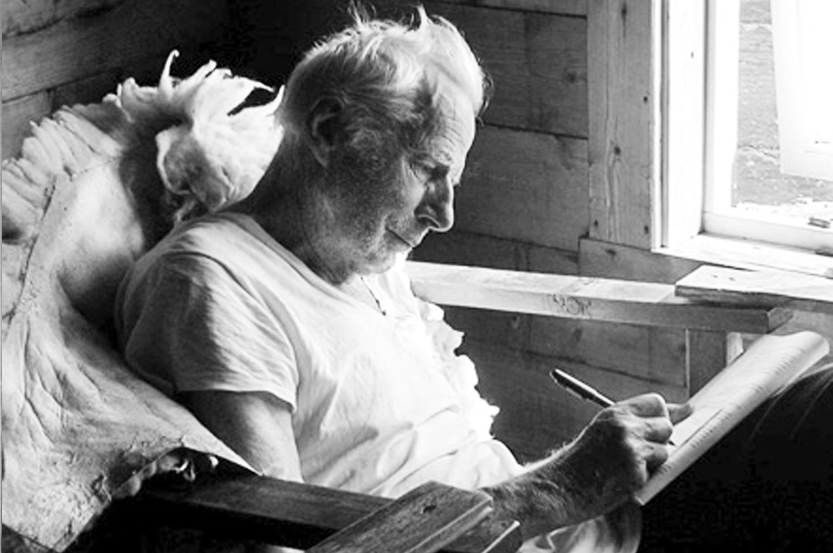

Indre refleksjon er når vi tar oss tid til å tenke dypt og stille spørsmål til oss selv om våre egne tanker, følelser og handlinger. Det handler om å se inn i vårt eget sinn og prøve å forstå oss selv bedre.
Tenk på det som å ha en samtale med deg selv. Du tar deg tid til å reflektere over tingene du tenker og føler, og spør deg selv hvorfor du tenker eller føler på en bestemt måte.
Indre refleksjon kan også hjelpe deg å forstå hvordan du påvirker andre mennesker og verden rundt deg. Ved å tenke over dine handlinger og hvordan de påvirker andre, kan du lære å være mer oppmerksom og ta ansvar for dine valg.